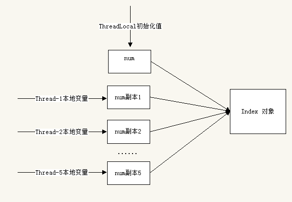
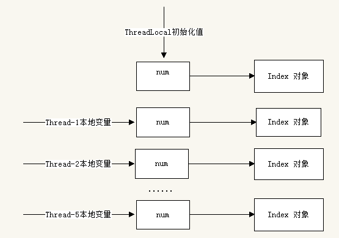

ThreadLocal 是什么
- 早在 JDK 1.2 的版本中就提供 java.lang.ThreadLocal，ThreadLocal 为解决多线程程序的
并发问题提供了一种新的思路。 - ThreadLocal 可以看做是一个容器，容器里面存放着属于当前线程的变量。当使用 ThreadLocal 维护变量时，ThreadLocal 为每个使用该变量的线程提供独立的变量副本，所以每一个线程都可以独立地改变自己的副本，而不会影响其它线程所对应的副本。
- 从线程的角度看，目标变量就象是线程的本地变量，这也是类名中“Local”所要表达的意思。
- 官方对 ThreadLocal 的解释：该类提供了线程局部 (thread-local) 变量。这些变量
不同于它们的普通对应物，因为访问某个变量（通过其 get 或 set 方法）的每个线程都
有自己的局部变量，它独立于变量的初始化副本。
ThreadLocal 实例通常是类中的 private static 字段，它们希望将状态与某一个线程
（例如，用户 ID 或事务 ID）相关联;
我们从中提取出 3 个要点：
- 每个线程都有自己的局部变量
每个线程都有一个独立于其他线程的上下文来保存这个变量，一个线程的本地变量对其他线程是不可见的 - 独立于变量的初始化副本
ThreadLocal 可以给一个初始值，而每个线程都会获得这个初始化值的一个副本，这样才能保证不同的线程都有一份拷贝。 - 状态与某一个线程相关联
ThreadLocal 不是用于解决共享变量的问题的，不是为了协调线程同步而存在，而是为了方便每个线程处理自己的状态而引入的一个机制，理解这点对正确使用 ThreadLocal 至关重要。
ThreadLocal 的接口方法
ThreadLocal 类接口:
- void set(Object value)：设置当前线程的线程局部变量的值。
- public Object get()：该方法返回当前线程所对应的线程局部变量。
- public void remove()：将当前线程局部变量的值删除，目的是为了减少内存的占用，该方法是
JDK 5.0 新增的方法。需要指出的是，当线程结束后，对应该线程的局部变量将自动被垃圾回收，
所以显式调用该方法清除线程的局部变量并不是必须的操作，但它可以加快内存回收的速度。 - protected Object initialValue()：返回该线程局部变量的初始值，该方法是一个
protected 的方法显然是为了让子类覆盖而设计的。这个方法是一个延迟调用方法，在线程第 1 次调用 get()或 set(Object)时才执行，并且仅执行 1 次，ThreadLocal 中的缺省实现直接
返回一个 null。
在 JDK5.0 中，ThreadLocal 已经支持泛型，该类的类名已经变为 ThreadLocal
ThreadLocal 是如何做到为每一个线程维护变量的副本的呢？其实实现的思路很简单：在 ThreadLocal 类中有一个 Map，用于存储每一个线程的变量副本，Map 中元素的键为线程
对象，而值对应线程的变量副本。
示例 1
public class ThreadLocalTest {
public static final ThreadLocal<Integer> local = new ThreadLocal<Integer>(){
protected Integer initialValue() {
return 0;
}
};
public static void main(String[] args) {
Thread[] threads = new Thread[5];
for (int i = 0; i < 5; ++i) {
threads[i] = new Thread(new Runnable() {
public void run() {
//获取当前线程的本地变量，然后累加5次
Integer localValue = local.get();
for (int i = 0; i < 5; ++i) {
localValue++;
}
//重新设置累加后的本地变量
local.set(localValue);
System.out.println(Thread.currentThread().getName() + "====>"+ local.get());
}
}, "Thread->" + i);
}
for (Thread thread : threads) {
thread.start();
}
}
}
结果：每个线程累加后的结果都是 5，各个线程处理自己的本地变量值，线程之间互不影响
Thread->0====>5
Thread->4====>5
Thread->3====>5
Thread->1====>5
Thread->2====>5
示例 2
public class ThreadLocalDemo {
static class Index{
private int num;
public int increase() {
return ++num;
}
}
private static Index num = new Index();
private static ThreadLocal<Index> local = new ThreadLocal<Index>(){
protected Index initialValue() {
return num;
}
};
public static void main(String[] args) {
Thread[] threads = new Thread[5];
for (int i = 0; i < 5; ++i) {
threads[i] = new Thread(new Runnable() {
public void run() {
//获取当前线程的本地变量，然后累加5次
Index num = local.get();
for (int i = 0; i < 5; ++i) {
num.increase();
}
//重新设置累加后的本地变量
local.set(num);
System.out.println(Thread.currentThread().getName() + "====>"+ local.get().num);
}
}, "Thread->" + i);
}
for (Thread thread : threads) {
thread.start();
}
}
}
结果：
Thread->0====>5
Thread->1====>10
Thread->2====>15
Thread->4====>20
Thread->3====>25
为什么线程本地变量又失效了呢？再来回味一下 “ThreadLocal 可以给一个初始值，而每个线程都会获得这个初始化值的一个副本” ，再来看一下上面代码中定义 ThreadLocal 的地方：
private static ThreadLocal<Index> local = new ThreadLocal<Index>(){
protected Index initialValue() {
return num;
}
};
上面代码中，我们通过覆盖 initialValue 函数来给我们的 ThreadLocal 提供初始值，每个线程都会获取这个初始值的一个副本。而现在我们的初始值是一个定义好的一个对象，num 是这个对象的引用。
换句话说我们的初始值是一个引用，引用的副本和引用指向的不就是同一个对象吗？

如果想给每一个线程都保存一个 Index 对象应该怎么办呢？那就是创建对象的副本而不是对象引用的副本：
private static ThreadLocal<Index> local = new ThreadLocal<Index>(){
protected Index initialValue() {
return new Index();
}
};

ThreadLocal 源码
ThreadLocal 有一个内部类 ThreadLocalMap，这个 ThreadLocalMap 的作用非常关键，它就是线程真正保存线程自己本地变量的容器。
每一个线程都有自己的单独的一个 ThreadLocalMap 实例，其所有的本地变量都会保存到这一个 map 中。现在就让我们从 ThreadLocal 的 get 和 set 这两个最常用的方法开始分析：
get()方法：
public T get() {
//获取当前执行线程
Thread t = Thread.currentThread();
//取得当前线程的ThreadLocalMap实例
ThreadLocalMap map = getMap(t);
//如果map不为空，说明该线程已经有了一个ThreadLocalMap实例
if (map != null) {
//map中保存线程的所有的线程本地变量，我们要去查找当前线程本地变量
ThreadLocalMap.Entry e = map.getEntry(this);
//如果当前线程本地变量存在这个map中，则返回其对应的值
if (e != null)
return (T)e.value;
}
//如果map不存在或者map中不存在当前线程本地变量，返回初始值
return setInitialValue();
}
线程隔离的秘密，就在于 ThreadLocalMap 这个类。ThreadLocalMap 是 ThreadLocal 类的一个静态内部类，它实现了键值对的设置和获取，每个线程中都有一个独立的 ThreadLocalMap 副本，它所存储的值，只能被当前线程读取和修改。
ThreadLocal 类通过操作每一个线程特有的 ThreadLocalMap 副本，从而实现了变量访问在不同线程中的隔离。因为每个线程的变量都是自己特有的，完全不会有并发错误。
还有一点就是，ThreadLocalMap 存储的键值对中的键是 this 对象指向的 ThreadLocal 对象，而值就是你所设置的对象了。
一个线程对象第一次使用线程本地变量的时候，需要对这个 threadLocals 属性进行初始化操作。
注意要区别 “线程第一次使用本地线程变量”和“第一次使用某一个线程本地线程变量”。
set()方法:
public void set(T value) {
Thread t = Thread.currentThread();
ThreadLocalMap map = getMap(t);
if (map != null)
map.set(this, value);
//说明线程第一次使用线程本地变量
else
createMap(t, value);
}
getMap()方法:
//直接返回线程对象的threadLocals属性
ThreadLocalMap getMap(Thread t) {
return t.threadLocals;
}
setInitialValue()方法:
private T setInitialValue() {
//获取初始化值，initialValue 就是我们之前覆盖的方法
T value = initialValue();
Thread t = Thread.currentThread();
ThreadLocalMap map = getMap(t);
//如果map不为空，将初始化值放入到当前线程的ThreadLocalMap对象中
if (map != null)
map.set(this, value);
else
//当前线程第一次使用本地线程变量，需要对map进行初始化工作
createMap(t, value);
//返回初始化值
return value;
}
remove()方法:
public void remove() {
//获取当前线程的ThreadLocalMap对象
ThreadLocalMap m = getMap(Thread.currentThread());
//如果map不为空，则删除该本地变量的值
if (m != null)
m.remove(this);
}
自定义 ThreadLocal
import java.util.Collections;
import java.util.HashMap;
import java.util.Map;
public class ThreadLocalDefine<T> {
private Map<Thread, T> container = Collections.synchronizedMap(new HashMap<Thread, T>());
public void set(T value) {
container.put(Thread.currentThread(), value);
}
public T get() {
Thread thread = Thread.currentThread();
T value = container.get(thread);
if (value == null && !container.containsKey(thread)) {
value = initialValue();
container.put(thread, value);
}
return value;
}
public void remove() {
container.remove(Thread.currentThread());
}
protected T initialValue() {
return null;
}
}
public interface Sequence {
int getNumber();
}
public class SequenceC implements Sequence {
private static ThreadLocalDefine<Integer> numberContainer = new ThreadLocalDefine<Integer>(){
protected Integer initialValue() {
return 0;
}
};
public int getNumber() {
numberContainer.set(numberContainer.get() + 1);
return numberContainer.get();
}
public static void main(String[] args) {
Sequence sequence = new SequenceC();
ClientThread thread1 = new ClientThread(sequence);
ClientThread thread2 = new ClientThread(sequence);
ClientThread thread3 = new ClientThread(sequence);
thread1.start();
thread2.start();
thread3.start();
}
}
结果：
Thread-0 => 1
Thread-0 => 2
Thread-0 => 3
Thread-1 => 1
Thread-1 => 2
Thread-1 => 3
Thread-2 => 1
Thread-2 => 2
Thread-2 => 3